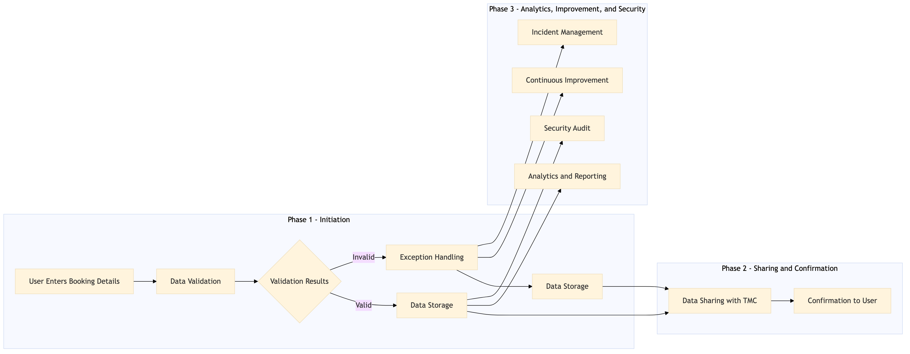

This process document outlines the collection and validation of passenger and guest details during the online booking flow for OTA systems like Expedia Open World, Partner Central, Amadeus NDC, Sabre GDS, Travelport, EVC, One Key, TravelAds, AWS SageMaker, Snowflake, Kafka, Salesforce, Tableau, and TMC systems such as SAP Concur T2, SAP Concur Expense, Amex GBT Neo/Complete, Amadeus GDS, SAP S/4HANA, International SOS, Cvent, Amex Corporate Card, VCN, SAP Analytics Cloud, Workday.
| Trigger | A user initiates a booking process on an OTA or TMC platform. |
| Outcome | Successful collection and validation of passenger and guest details leading to the completion of the booking process. |
| Systems | Expedia Open World Partner Central Amadeus NDC Sabre GDS Travelport EVC One Key TravelAds AWS SageMaker Snowflake Kafka Salesforce Tableau SAP Concur T2 SAP Concur Expense Amex GBT Neo/Complete Amadeus GDS SAP S/4HANA International SOS Cvent Amex Corporate Card VCN SAP Analytics Cloud Workday |

Click to enlarge
| Step | Name & Pain Point | Role | System | Input | Output | KPI | Flags |
|---|---|---|---|---|---|---|---|
| 1.1 | User Enters Booking Details Handling incorrect or incomplete data entries | Traveler | Expedia Open World, Partner Central, Amadeus NDC, Sabre GDS, Travelport, EVC, One Key, TravelAds | Passenger and guest details (e.g., name, contact information, travel dates) | Validated passenger and guest details | 95% accuracy in data entry | ⚠ Exception |
| 1.2 | Data Validation Real-time validation of complex data rules | System | AWS SageMaker, Snowflake, Kafka, Salesforce, Tableau | Passenger and guest details | Validation results (valid/invalid) | 98% validation accuracy | ◆ Decision |
| 1.3 | Exception Handling Efficiently resolving data entry errors | Traveler, Customer Support | Salesforce, Tableau | Invalid passenger and guest details | Corrected passenger and guest details | 90% resolution rate for exceptions | ◆ Decision⚠ Exception |
| 1.4 | Data Storage Ensuring secure and reliable data storage | System | Snowflake, Kafka | Validated passenger and guest details | Stored passenger and guest details | 99% data integrity | ⚠ Exception |
| 1.5 | Data Sharing with TMC Interoperability between OTA and TMC systems | System | SAP Concur T2, SAP Concur Expense, Amex GBT Neo/Complete, Amadeus GDS, SAP S/4HANA, International SOS, Cvent, Amex Corporate Card, VCN, SAP Analytics Cloud, Workday | Validated passenger and guest details | Shared passenger and guest details with TMC systems | 95% successful data sharing rate | ◆ Decision |
| 1.6 | Confirmation to User Clear communication of validation results | Traveler | Expedia Open World, Partner Central, TravelAds | Validated passenger and guest details | Confirmation of successful data entry | 98% user satisfaction with confirmation process | ⚠ Exception |
| 1.7 | Analytics and Reporting Generating actionable insights from data | Data Analyst | Tableau, SAP Analytics Cloud | Passenger and guest details | Analytics reports on booking trends | 90% accuracy in analytics reporting | ⚠ Exception |
| 1.8 | Continuous Improvement Adapting to changing user needs and regulations | IT Team, Data Analyst | AWS SageMaker, Snowflake, Kafka, Salesforce, Tableau | Analytics reports and user feedback | Improved data validation rules and processes | 85% reduction in data entry errors over 6 months | ◆ Decision |
| 1.9 | Security Audit Maintaining high standards of data privacy | IT Security Team | Snowflake, Kafka, Salesforce | Passenger and guest details | Audit report on data security compliance | 100% adherence to data protection regulations | ◆ Decision |
| 1.10 | Incident Management Responding quickly to data-related issues | IT Support, Customer Support | Salesforce, Tableau | Data entry errors or security breaches | Resolved incidents and updated procedures | 95% resolution rate for incidents within 24 hours | ◆ Decision⚠ Exception |